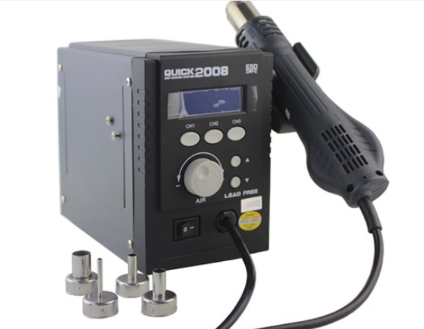
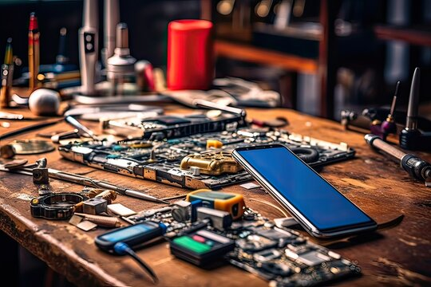
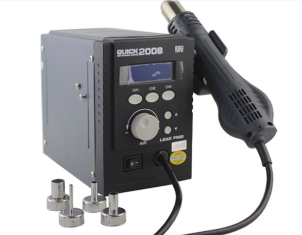
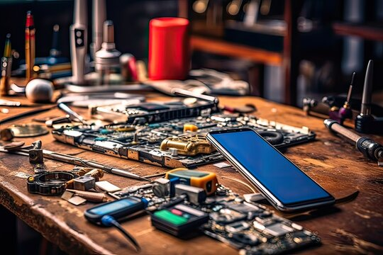
 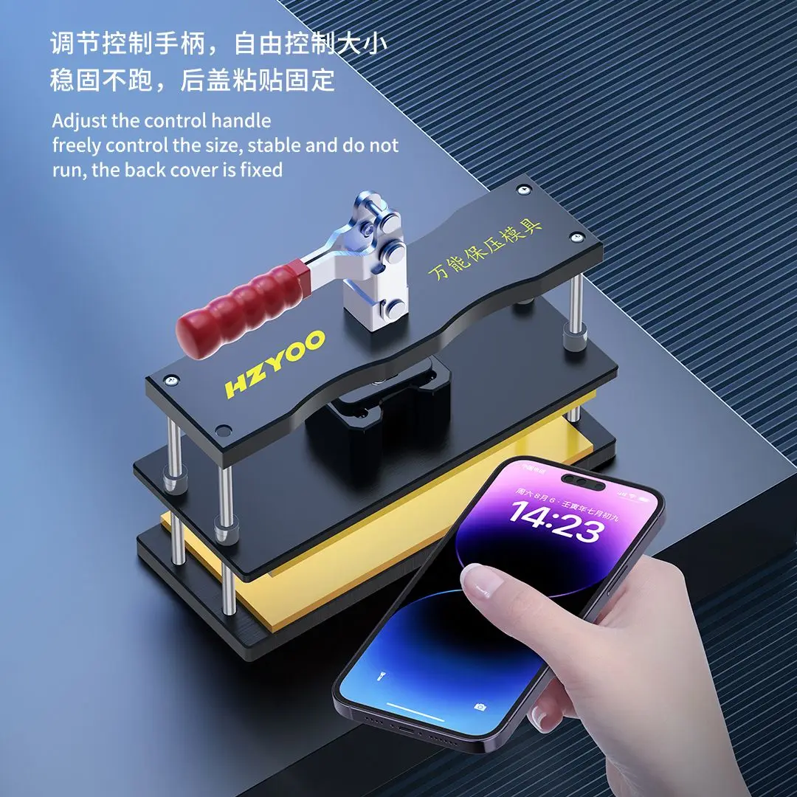
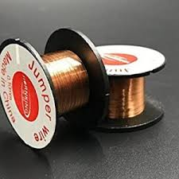
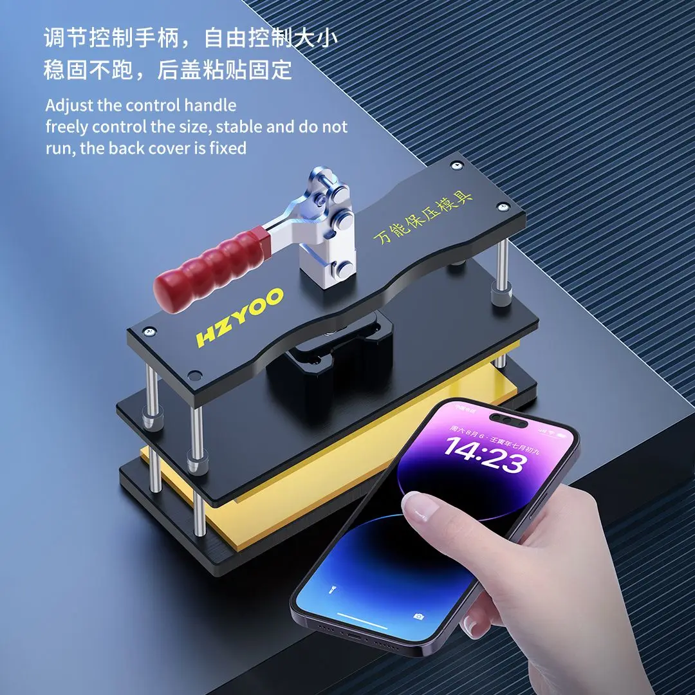
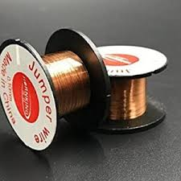
Enhance your skills with our expert-led training courses
صيانة الموبايلات تعني العمليات التي تتم للحفاظ على أداء الأجهزة الذكية مثل الهواتف الذكية بحالة جيدة وتأمين استمرارية عملها وفعاليتها. يتضمن ذلك العديد من الأنشطة والإجراءات التي تهدف إلى تشخيص وإصلاح الأعطال، والحفاظ على الجودة والكفاءة في استخدام الجهاز.
الجانب النظري:
مقدمة في صيانة الموبايلات
تعريف عن أهمية وضرورة صيانة الموبايلات.
استعراض تطور التكنولوجيا في الموبايلات وتأثيرها على عمليات الصيانة.
أساسيات الإلكترونيات والأجهزة الذكية:
مبادئ الإلكترونيات الأساسية المتعلقة بأجهزة الموبايل.
دراسة مكونات الهاتف الذكي ووظائفها.
تقنيات الاختبار والتشخيص:
كيفية استخدام أدوات الاختبار لتحديد الأعطال في الموبايلات.
تحليل وتشخيص الأعطال الشائعة مثل مشاكل الشحن، الشاشة، البطارية، والأجزاء الداخلية الأخرى.
البرمجيات والتحديثات:
أساسيات تحميل وتثبيت التحديثات للنظام والبرمجيات على الهواتف الذكية.
تعلم استخدام برامج الصيانة لإصلاح الأعطال البرمجية.
الجانب العملي:
فنون الصيانة العملية:
تعليم كيفية استخدام أدوات الصيانة بشكل صحيح وآمن.
الخطوات العملية لتفكيك وتجميع الهواتف الذكية دون إلحاق ضرر.
إصلاح الأعطال:
تطبيق الإجراءات الصحيحة لإصلاح الأعطال الشائعة بما في ذلك استبدال الشاشات، البطاريات، والأجزاء الداخلية الأخرى.
تدريب على تقنيات اللحام والتحام الأسلاك لإصلاح الأجزاء الإلكترونية.
إدارة الأدوات والموارد:
كيفية تنظيم وإدارة أدوات الصيانة والموارد المتاحة لضمان كفاءة العمل.
تطبيقات عملية ودراسات الحالة:
حل دراسات الحالة العملية لحالات صيانة معقدة.
تنفيذ تجربة عملية لصيانة هواتف ذكية تعزز من مهارات الطلاب وفهمهم العملي لعمليات الصيانة.
>مناسب لجميع الاعمار الكورس ابتداء من 18 سنة
24 محاضرة, كل محاضرة تكون لمدة ساعة ونصف نظري وساعتين عملي, وتكون بمعدل محاضرتين اسبوعيا اى لمدة 3 أسابيع, ويشمل الكورس ايضا 4 محاضرات على مدار شهر تشمل مشاريع متطورة للتأكد من تأهل المتدرب نهائيا
نعم....تحتاج عدة أدوات خاصة في البداية , تشمل كل الأدوات التي يحتاج المتدرب اليها
قيمة الكورس الحالية: 6000 جنيه مصري, ولا تشمل سعر الأدوات التي يكون قيمتها 2000 جنيه مصري
بالطبع ... لأن الكورس لا يعتمد على الجانب النظري اطلاقا بل على الممارسة والتدريب من حالات عملية للأجهزة التالفة التي تحتاج لاعادة تصليحها, حيث أن الكورس لا يشمل فقط ألية التصليح, بل ايضا التدريب على السوفت وير ومذلك التعرف على الاجهزة الحديثة في التصليح وكيفية استخدامها حتى يكون المتدرب مؤهلا تماما لسوق العمل فورا من بعد الانتهاء من الكورس
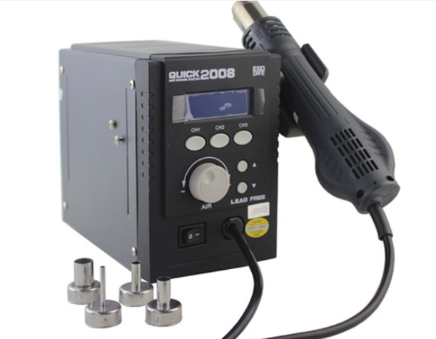
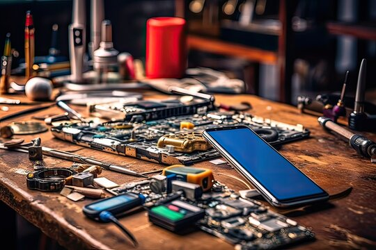
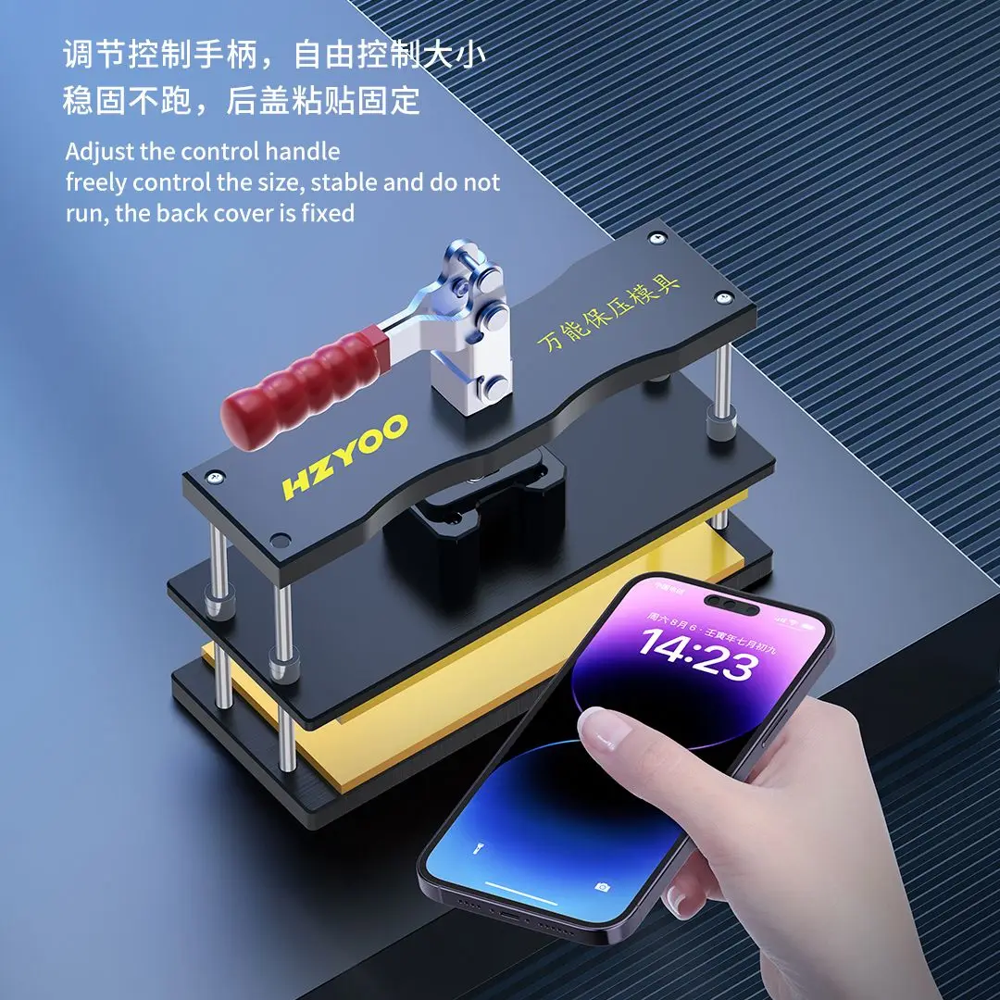
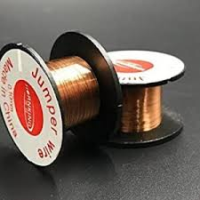